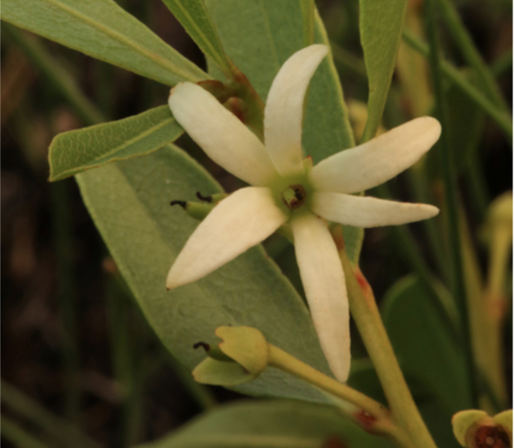
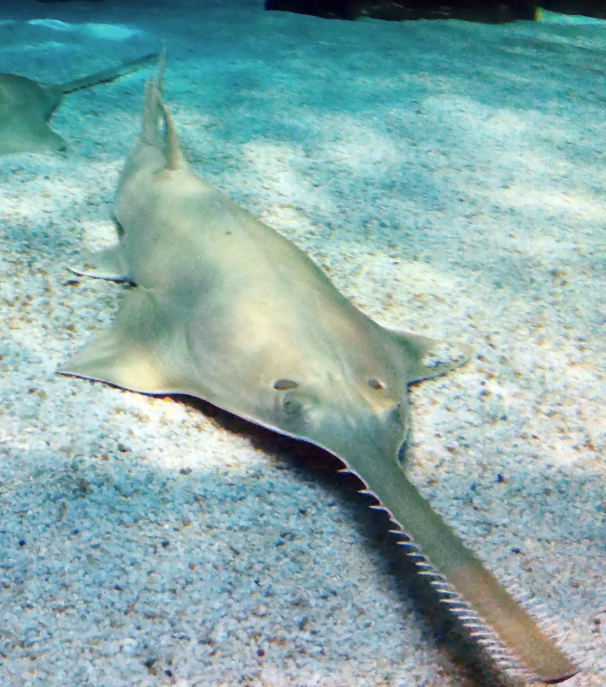
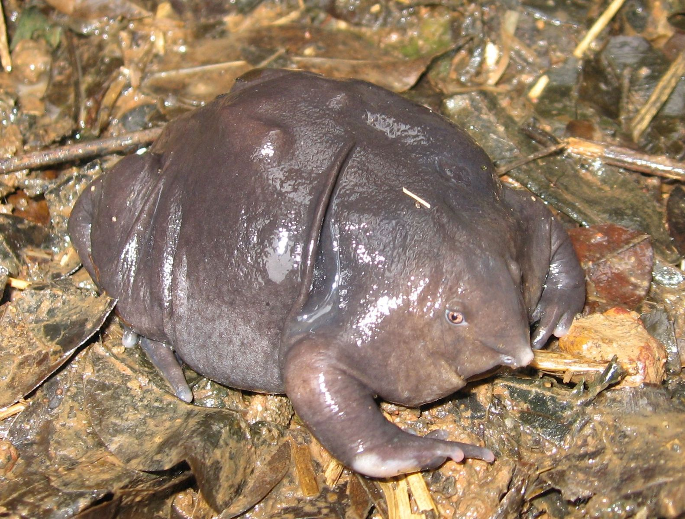
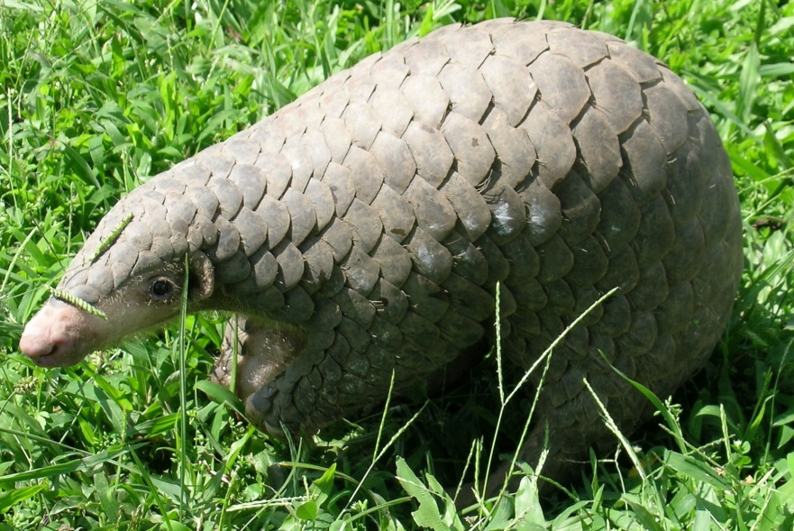
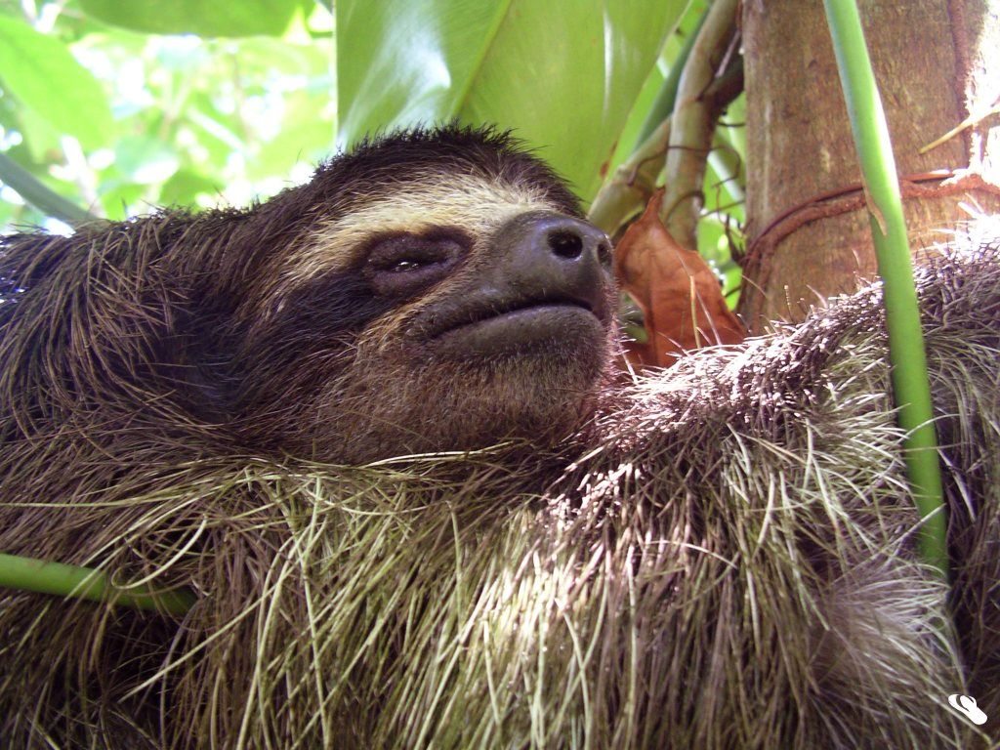
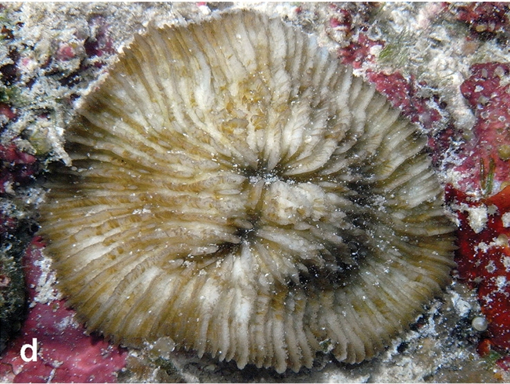
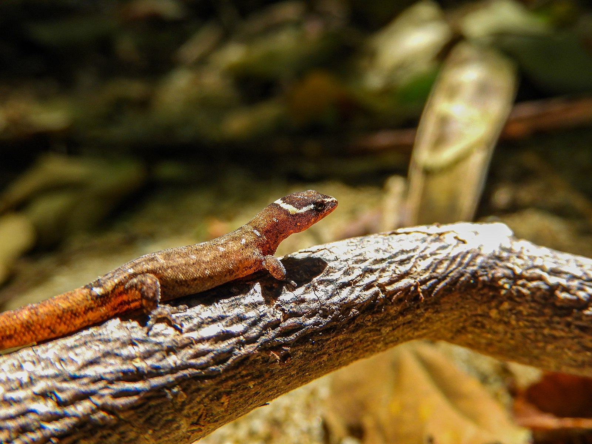

<!DOCTYPE html>
<html></html>
    <head>
        <meta charset="utf-8">
        <meta name="viewport" content="width=device-width, initial-scale=1">
        <title>Conservation Station</title>
        <!-- CSS style sheets -->
        <link rel="stylesheet" href="css/base.css">
        <link rel="stylesheet" href="css/spotlight.css">

        <script src="https://kit.fontawesome.com/4b77d889df.js" crossorigin="anonymous"></script>
        <!-- Javascript -->
        <!-- <script src="/script.js" defer></script> -->
    </head>
    
    <body>
        <header>
            <!-- Navbar -->
            <div class="navbar">
                <div class="container">
                    <div class="flex-end">
                        <h1><a href="index.html">Conservation Station</a></h1>
                        <nav>
                            <ul>
                                <li class="dropdown">
                                    <a href="#">Resources</a>
                                    <div class="dropdown-menu">
                                        <a href="conservation.html">What is conservation?</a>
                                        <a href="why.html">Why do we need conservation?</a>
                                        <a href="spotlight.html">Species Spotlight</a>
                                    </div>
                                </li>
                                <li><a href="action.html" >Take Action</a></li>
                                <li><a href="donate.html">Donate</a></li>
                            </ul>
                        </nav>
                    </div>
                </div>
            </div>
            <div class="heading">
                
            </div>
        </header>
        <main>
            <h1>Check out these underappreciated species!</h1>
            <p>There are simply too many endangered animals. 
                With the majority of funding going towards more popular
                animals such as pandas, many conservation efforts dedicated to saving less known species are left underfunded.
                 A 2016 PNAS paper suggests that shifting surplus funding from overfunded recovery efforts to underfunded recovery efforts could benefit over 150 species, most of them obscure and suffering severe neglect.
                See what you can do to help these animals <a href="action.html">here</a> <i class="fa-solid fa-arrow-right"></i></p>
            <div class="showcase">
                <div class="card">
                    <h2>Beatiful Pawpaw</h2>
                    
                    <h3>Status: Endangered</h3>
                    <p>Current spending: $4,614 <br> 
                    % of reccomended spending: 0.04%</p>
                </div>
                <div class="card">
                    <h2>Green Sawfish</h2>
                    
                    <h3>Status: Critically Endangered</h3>
                </div>
                <div class="card">
                    <h2>Purple Frog</h2>
                    
                    <br>
                    <a class="cite" href="https://commons.wikimedia.org/wiki/File:Nasikabatrachus_sahyadrensis.jpg">Karthickbala at ta.wikipedia</a>, <a class = "cite" href="https://creativecommons.org/licenses/by-sa/3.0">CC BY-SA 3.0, via Wikimedia Commons</a>
                    <h3>Status: Endangered</h3>
                </div>
                <div class="card">
                    <h2>Hispaniolan Solenodon</h2>
                    <a title="frank wouters, CC BY 2.0 &lt;https://creativecommons.org/licenses/by/2.0&gt;, via Wikimedia Commons" href="https://commons.wikimedia.org/wiki/File:Hispaniola_solenodon.jpg"></a>
                    <br>
                    <a class="cite" href="https://commons.wikimedia.org/wiki/File:Hispaniola_solenodon.jpg">frank wouters</a>, <a class="cite" href="https://creativecommons.org/licenses/by/2.0">CC BY 2.0, via Wikimedia Commons</a>
                    <h3>Status: Endangered</h3>
                </div>
                <div class="card">
                    <h2>Chinese Pangolin</h2>
                    
                    <br>
                    <a class="cite" href="https://commons.wikimedia.org/wiki/File:Manis_pentadactyla_(29054818144).jpg">U.S. Fish and Wildlife Service Headquarters</a>, <a class="cite" href="https://creativecommons.org/licenses/by/2.0">CC BY 2.0, via Wikimedia Commons</a>
                    <h3>Status: Critically Endangered</h3>
                </div>
                <div class="card">
                    <h2>Pygmy Three-toed Sloth</h2>
                    
                    <br>
                    <a class="cite" href="https://commons.wikimedia.org/wiki/File:Perezoso_La_Mochila.jpg">Lider Sucre</a>, <a class="cite" href="https://creativecommons.org/licenses/by-sa/3.0">CC BY-SA 3.0, via Wikimedia Commons</a>
                    <h3>Status: Critically Endangered</h3>
                </div>
                <div class="card">
                    <h2>Lithophyllon ranjithi</h2>
                    
                    <br>
                    <a class="cite" href="https://commons.wikimedia.org/wiki/File:Lithophyllon_ranjithi.jpg">Zarinah Waheed, Francesca Benzoni, Sancia E. T. van der Meij, Tullia Isotta Terraneo, Bert W. Hoeksema</a>, <a class="cite" href="https://creativecommons.org/licenses/by/4.0">CC BY 4.0, via Wikimedia Commons</a>
                    <h3>Status: Endangered</h3>
                </div>
                <div class="card">
                    <h2>Colombian Dwarf Gecko</h2>
                    
                    <br>
                    <a class="cite" href="https://commons.wikimedia.org/wiki/File:Lepidoblepharis_miyatai_111348897.jpg">José Gabriel Julio Guzmán</a>, <a class="cite" href="https://creativecommons.org/licenses/by/4.0">CC BY 4.0, via Wikimedia Commons</a>
                    <h3>Status: Critically Endangered</h3>
                </div>
            </div>
            
        </main>
        <footer class="column3">
            <h1>Conservation Station</h1>
            <nav>
                <ul>
                    <li><a href="index.html">Home</a></li>
                    <li>
                        <a href="#">Resources</a>
                        <ul class="submenu">
                            <li><a href="conservation.html">What is conservation?</a></li>
                            <li><a href="why.html">Why do we need conservation?</a></li>
                            <li><a href="spotlight.html">Species Spotlight</a></li>
                        </ul>
                    </li>
                    <li><a href="action.html" >Take Action</a></li>
                    <li><a href="donate.html">Donate</a></li>
                </ul>
            </nav>
            
            <div class="social">
                <a href="https://github.com/Minty20090"><i class="fab fa-github fa-2x"></i></a>
                <a href="https://www.linkedin.com/in/maylin-chen-601803243/"><i class="fa-brands fa-linkedin fa-2x"></i></a>
            </div>
        </footer>
    </body>
</html>